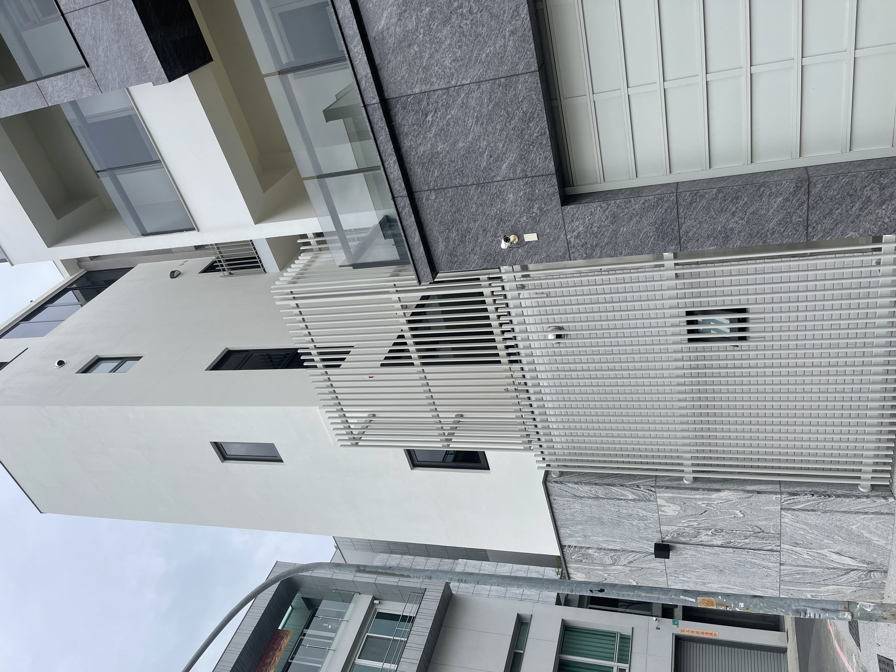
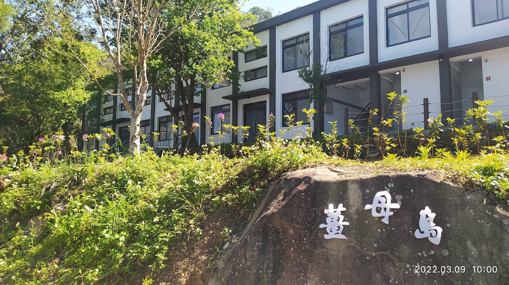

歡迎兩位帷幕博士專家蒞臨指導！騰煇企業深耕台灣 40 餘年，從傳統水泥工藝發展至今日 3D BIM 數位放樣與系統化外牆工程整合。
騰煇前身為民國 70 年創立之台安藝品工業社，累積超過 40 年的水泥材料特性與工程經驗。
騰煇取得國際 ISO 雙重驗證，協助建商與建築師符合低碳建築與綠建材規範。
我們不做設計，而是作為建築師最可靠的「3D 數位拆圖與施工落地夥伴」。
從前期可行性評估到最後塗料整合，提供標準化且可追溯的工程流程。
水泥具高抗壓強度但抗張力不足，摻合耐鹼玻璃纖維補其不足。
採用 GRC 乾式施工法，現場骨架定位 ➔ 構件鎖固 ➔ 面層噴塗完工。

騰煇四大優勢：原裝進口正式報關、PPG 原料 5 年 ✕ 騰煇施工 5 年雙重保固、連工帶料、適應台灣氣候。
鎖固卡扣升級版：外部導水 ＋ 結構灌注，切斷雨水回滲路徑。

無須敲除瓷磚，透點敲擊檢測 ➔ 高壓清洗 ➔ 介面填縫 ➔ 噴塗防護面層。
騰煇 40 年來在 GRC 預鑄造型、PPG 高耐候塗料與 3D BIM 放樣建立了扎實的施工落地能力。 我們抱持著學習與探索的心情，積極向帷幕領域深度交流，期待攜手共建更嚴謹的建築立面生態系！